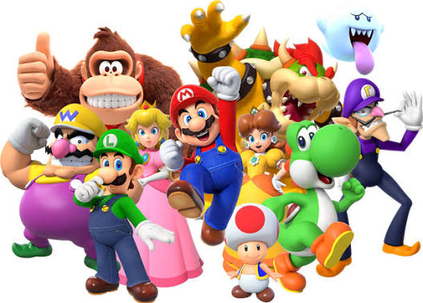

Definición: Es una de las sagas más famosas de Nintendo, protagonizada por el fontanero Mario, que rescata a la princesa Peach de Bowser.
Lo mejor del juego: Sus niveles de plataformas divertidos y fáciles de aprender, con música y personajes que todo el mundo reconoce.